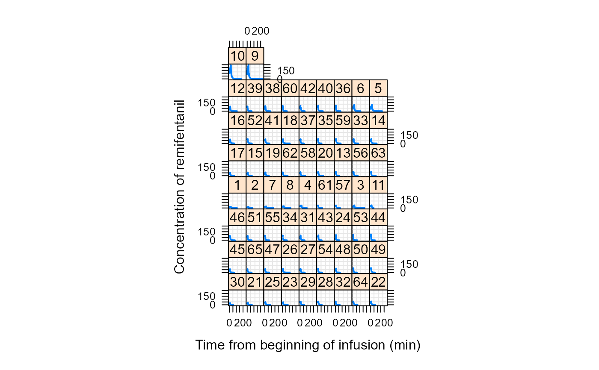
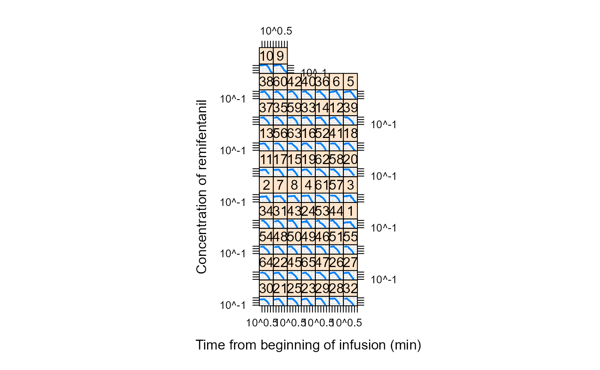
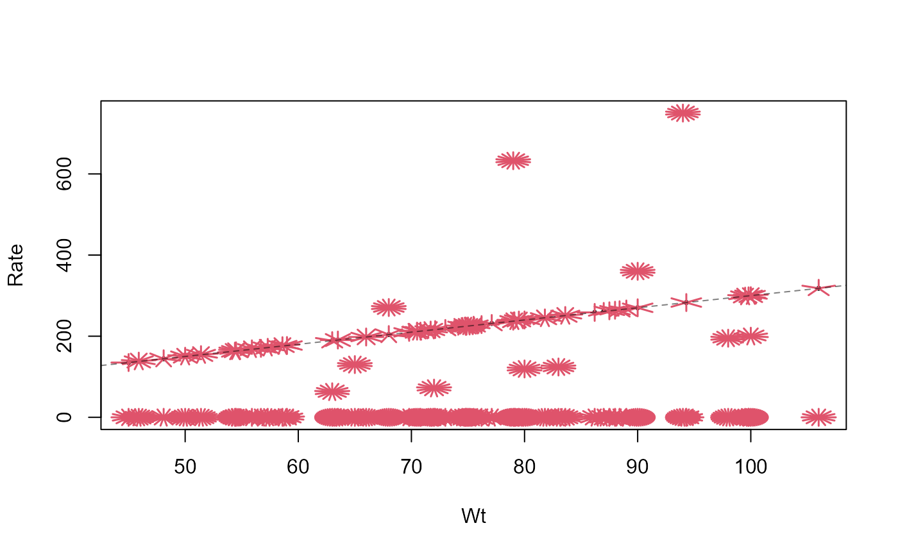

Pharmacokinetics of Remifentanil
Remifentanil.RdIntravenous infusion of remifentanil (a strong analgesic) in different
rates over varying time periods was applied to a total of 65 patients.
Concentration measurements of remifentanil were taken along with several
covariates resulting in the Remifentanil data frame with 2107 rows
and 12 columns.
Usage
data("Remifentanil", package = "nlme")Format
This data frame (of class "groupedData", specifically
"nfnGroupedData") contains the following columns:
ID:numerical (patient) IDs.
Subject:an
orderedfactor with 65 levels (of theIDs):30<21<25<23<29< ... ... <36<6<5<10<9.Time:time from beginning of infusion in minutes (
numeric).conc:remifentanil concentration in [ng / ml] (numeric).
Rate:infusion rate in [µg / min].
Amt:amount of remifentanil given in the current time interval in [µg].
Age:age of the patient in years.
Sex:gender of the patient, a
factorwith levelsFemaleandMale.Ht:height of the patient in cm.
Wt:weight of the patient in kg.
BSA:body surface area (DuBois and DuBois 1916): \(% BSA := Wt^{0.425} \cdot Ht^{0.725} \cdot 0.007184\).
LBM:lean body mass (James 1976), with slightly different formula for men \(LBM_m := 1.1 Wt - 128 (Wt/Ht)^2\), and women \(LBM_f := 1.07 Wt - 148 (Wt/Ht)^2\).
Source
Pinheiro, J. C. and Bates, D. M. (2000). Mixed-Effects Models in S and S-PLUS, Springer, New York.
References
Minto CF, Schnider TW, Egan TD, Youngs E, Lemmens HJM, Gambus PL, Billard V, Hoke JF, Moore KHP, Hermann DJ, Muir KT, Mandema JW, Shafer SL (1997). Influence of age and gender on the pharmacokinetics and pharmacodynamics of remifentanil: I. Model development. Anesthesiology 86 1, 10--23. https://pubs.asahq.org/anesthesiology/article/86/1/10/35947/Influence-of-Age-and-Gender-on-the
Charles F. Minto, Thomas W. Schnider and Steven L. Shafer (1997). Pharmacokinetics and Pharmacodynamics of Remifentanil: II. Model Application. Anesthesiology 86 1, 24--33. https://pubs.asahq.org/anesthesiology/article/86/1/24/35925/Pharmacokinetics-and-Pharmacodynamics-of
Examples
plot(Remifentanil, type = "l", lwd = 2) # shows the 65 patients' remi profiles

## The same on log-log scale (*more* sensible for modeling ?):
plot(Remifentanil, type = "l", lwd = 2, scales = list(log=TRUE))

str(Remifentanil)
#> Classes 'nfnGroupedData', 'nfGroupedData', 'groupedData' and 'data.frame': 2107 obs. of 12 variables:
#> $ ID : num 1 1 1 1 1 1 1 1 1 1 ...
#> $ Subject: Ord.factor w/ 65 levels "30"<"21"<"25"<..: 28 28 28 28 28 28 28 28 28 28 ...
#> $ Time : num 0 1.5 2 2.52 3.02 3.63 4.05 5.02 6.02 7.03 ...
#> $ conc : num NA 9.51 11.5 14.1 16.7 17.1 16.8 18.7 14.2 15.8 ...
#> $ Rate : num 72 72 72 72 72 ...
#> $ Amt : num 108 36 37.4 36 43.9 ...
#> $ Age : num 30.6 30.6 30.6 30.6 30.6 ...
#> $ Sex : Factor w/ 2 levels "Female","Male": 2 2 2 2 2 2 2 2 2 2 ...
#> $ Ht : num 171 171 171 171 171 171 171 171 171 171 ...
#> $ Wt : num 72 72 72 72 72 72 72 72 72 72 ...
#> $ BSA : num 1.84 1.84 1.84 1.84 1.84 ...
#> $ LBM : num 56.5 56.5 56.5 56.5 56.5 ...
#> - attr(*, "outer")=Class 'formula' language ~Sex
#> .. ..- attr(*, ".Environment")=<environment: R_GlobalEnv>
#> - attr(*, "formula")=Class 'formula' language conc ~ Time | Subject
#> .. ..- attr(*, ".Environment")=<environment: R_GlobalEnv>
#> - attr(*, "labels")=List of 2
#> ..$ x: chr "Time from beginning of infusion"
#> ..$ y: chr "Concentration of remifentanil"
#> - attr(*, "units")=List of 1
#> ..$ x: chr "(min)"
#> - attr(*, "FUN")=function (x)
#> ..- attr(*, "source")= chr "function (x) max(x, na.rm = TRUE)"
#> - attr(*, "order.groups")= logi TRUE
summary(Remifentanil)
#> ID Subject Time conc
#> Min. : 1.00 9 : 54 Min. : 0.00 Min. : 0.100
#> 1st Qu.:11.00 5 : 53 1st Qu.: 7.03 1st Qu.: 2.625
#> Median :24.00 10 : 53 Median : 15.07 Median : 16.765
#> Mean :27.15 8 : 50 Mean : 23.54 Mean : 26.640
#> 3rd Qu.:42.00 6 : 50 3rd Qu.: 32.01 3rd Qu.: 40.663
#> Max. :65.00 1 : 49 Max. :230.05 Max. :245.400
#> (Other):1798 NA's :115
#> Rate Amt Age Sex
#> Min. : 0.00 Min. : 0.00 Min. :20.00 Female: 782
#> 1st Qu.: 0.00 1st Qu.: 0.00 1st Qu.:24.66 Male :1325
#> Median : 0.00 Median : 0.00 Median :30.75
#> Mean : 69.16 Mean : 75.16 Mean :40.94
#> 3rd Qu.:138.50 3rd Qu.: 88.30 3rd Qu.:59.00
#> Max. :750.00 Max. :1515.00 Max. :85.00
#>
#> Ht Wt BSA LBM
#> Min. :156.0 Min. : 45.00 Min. :1.428 Min. :36.46
#> 1st Qu.:163.0 1st Qu.: 65.00 1st Qu.:1.690 1st Qu.:47.09
#> Median :175.0 Median : 75.00 Median :1.905 Median :57.51
#> Mean :173.3 Mean : 74.53 Mean :1.880 Mean :56.12
#> 3rd Qu.:183.0 3rd Qu.: 83.60 3rd Qu.:2.015 3rd Qu.:63.12
#> Max. :193.0 Max. :106.00 Max. :2.309 Max. :75.64
#>
plot(xtabs(~Subject, Remifentanil))
summary(unclass(table(Remifentanil$Subject)))
#> Min. 1st Qu. Median Mean 3rd Qu. Max.
#> 20.00 22.00 24.00 32.42 42.00 54.00
## between 20 and 54 measurements per patient (median: 24; mean: 32.42)
## Only first measurement of each patient :
dim(Remi.1 <- Remifentanil[!duplicated(Remifentanil[,"ID"]),]) # 65 x 12
#> [1] 65 12
LBMfn <- function(Wt, Ht, Sex) ifelse(Sex == "Female",
1.07 * Wt - 148*(Wt/Ht)^2,
1.1 * Wt - 128*(Wt/Ht)^2)
with(Remi.1,
stopifnot(all.equal(BSA, Wt^{0.425} * Ht^{0.725} * 0.007184, tol = 1.5e-5),
all.equal(LBM, LBMfn(Wt, Ht, Sex), tol = 7e-7)
))
## Rate: typically 3 µg / kg body weight, but :
sunflowerplot(Rate ~ Wt, Remifentanil)
abline(0,3, lty=2, col=adjustcolor("black", 0.5))
